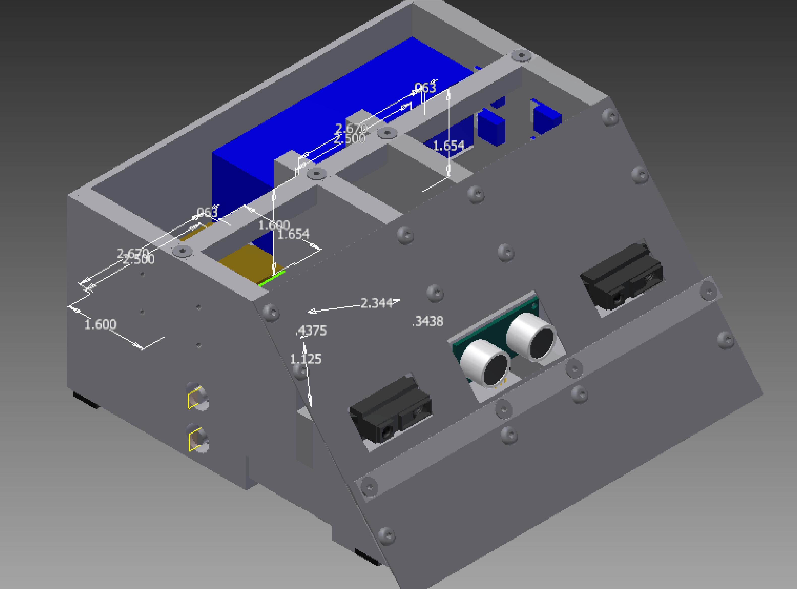

Information about the Sumo project
The Davis Robotics Club participates in the annual Robogames Sumo games, competing in the 3kg autonomous category, the rules for which can be found here. We think this is the most competitive category, and a better fit for us, since it allows the use of magnets and places a bigger importance on clever programming rather than a skilled operator. So far, there has been no mention of a time for the 2014 Robogames, but we're keeping our hopes up that it'll happen.
Our current equipment includes:
- The brains of the robot, Pololu Baby Orangutan B-328 with an onboard ATMega328P.
- The sensors, which could all be swapped out for faster, better ones.
- The motors (cheap and somewhat powerful)
 This is the older design for the sumo robot, which would have competed in the 2012 Robogames had it's H-bridge not had a fatal flaw in it's design that caused it to blown up.
The current design and manufacture is being headed by Bobby Kian,